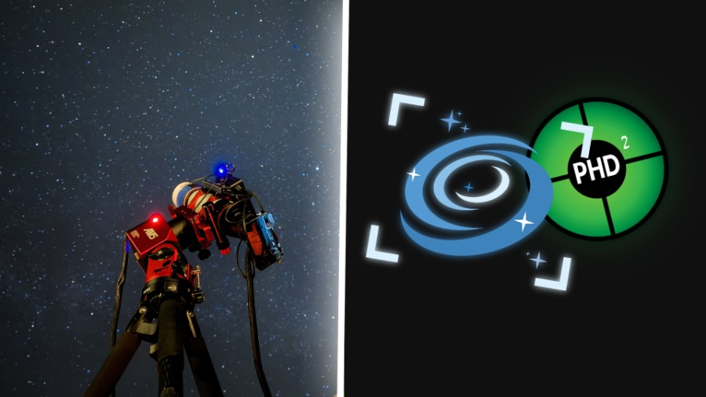
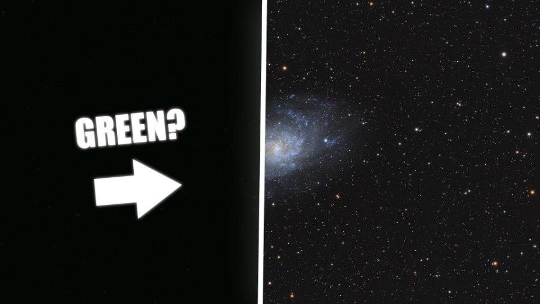
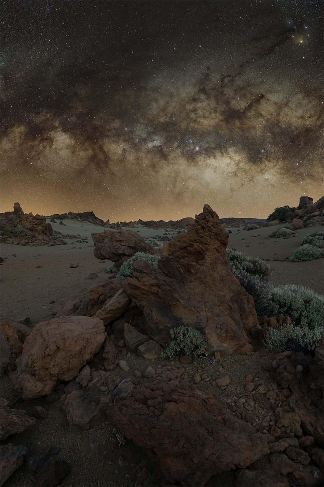
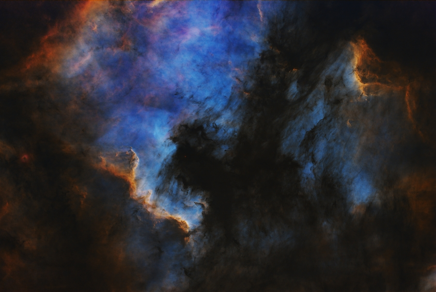
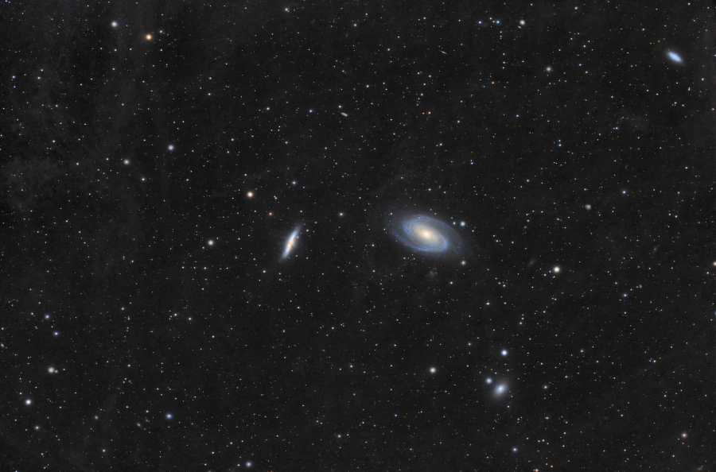
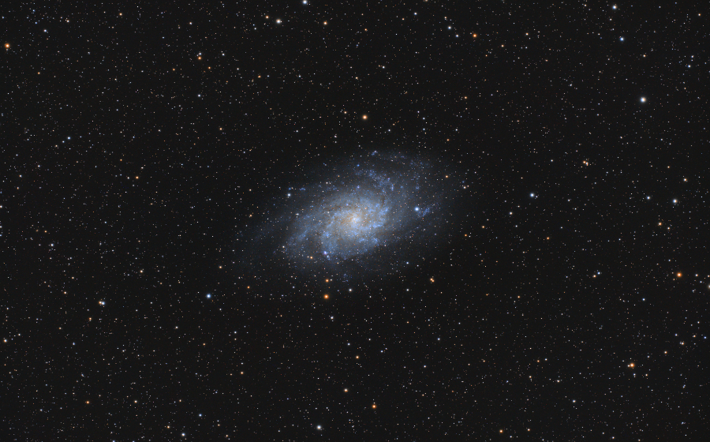

Practical Guides
View all guides
Sleep While Using Your Telescope: A Guide to NINA
Building NINA sequences that handle target acquisition through shutdown, manage failures automatically, and let you sleep while imaging.

What Should Stacked Images Look Like?
Understanding why your stacked astrophotography images look dim, flat, and green before processing.
In development
Motorized Flat Panel
Make flats part of your imaging sequence. A motorized cover and dimmable light, controlled through NINA or the AstroTaca Windows app.
Explore the flat panelNot available to order yet.

Latest Images
View full gallery
Winter Milky Way above Minas de San José in Tenerife
RGB · 48 minutes · widefield

The Cygnus wall in NGC 7000
SHO · 6 hours · nebulae

Bode’s Galaxy and the Cigar Galaxy in Ursa Major
RGB · 15 hours · galaxies

The Triangulum Galaxy, a Spiral Galaxy in Triangulum
RGB · 22.5 hours · galaxies